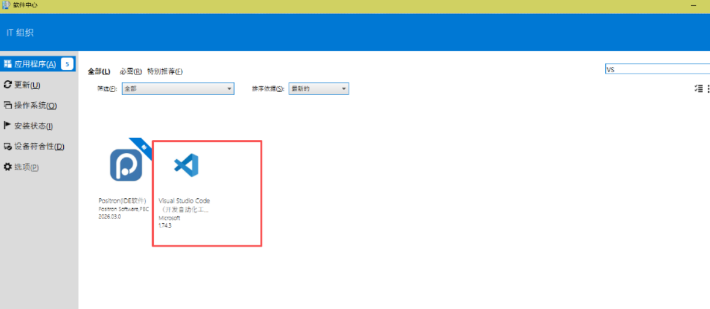
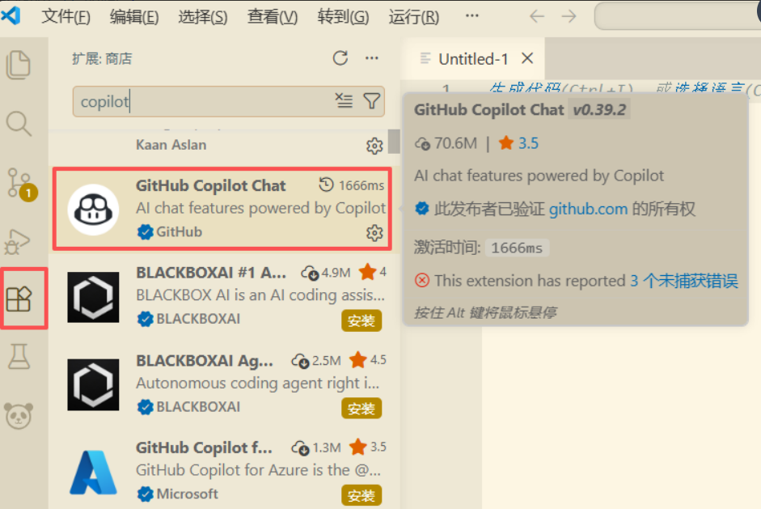
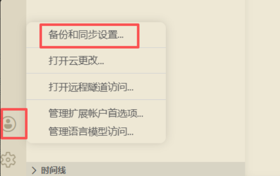
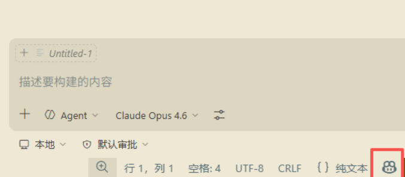

01
安装工具
进入公司内部软件中心，搜索并安装 Visual Studio Code，先把团队统一的编辑器底座准备好。

先完成环境配置，再快速判断模型选型，团队成员可以直接进入可用状态。
适用于团队同事首次接入 VS Code + GitHub Copilot。内容整理自当前首页文稿，并保留了原有配图。
进入公司内部软件中心，搜索并安装 Visual Studio Code，先把团队统一的编辑器底座准备好。

打开 VS Code，进入扩展市场，搜索 copilot，安装官方的 GitHub Copilot Chat 相关插件。

点击左下角账户入口，使用 GitHub 登录，并按公司分发信息完成授权对接。

回到主界面后观察右下角状态区域，看到机器人标识即可判断 Copilot 已接入可用。

给团队一个实用的选择基线：不同模型各有优势，不需要每次从零试错。
| 评估维度 | Gemini 3.1 | GPT 5.4 | Claude Opus 4.6 | Claude Sonnet 4.6 |
|---|---|---|---|---|
| 逻辑与数学推理 | 🟨 推荐 | 🟩 卓越 | 🟩 卓越 | 🟨 推荐 |
| 创意与长文写作 | 🟨 推荐 | 🟨 推荐 | 🟩 卓越 | 🟨 推荐 |
| 代码编写与架构 | 🟨 推荐 | 🟩 卓越 | 🟨 推荐 | 🟩 卓越 |
| 超长文本处理 | 🟩 卓越 | 🟨 推荐 | 🟩 卓越 | 🟨 推荐 |
| 多模态理解 | 🟩 卓越 | 🟩 卓越 | 🟨 推荐 | 🟧 够用 |
| 响应速度与执行力 | 🟨 推荐 | 🟧 够用 | 🟧 够用 | 🟩 卓越 |
| 综合性价比 | 🟨 推荐 | 🟧 够用 | 🟧 够用 | 🟩 卓越 |
适合高难度逻辑推导、复杂代码攻坚和系统级重构。
适合长文润色、复杂文档精读以及更有语感的高级写作。
适合日常高频写代码、快速协作和高吞吐流水线任务。
适合大规模多模态输入、超长上下文阅读与项目级检索。
按场景整理可直接复用的 Prompt 模板。
用于整理历史项目目录，只保留运行必需内容与核心数据。
用于把模糊需求整理成可执行的任务清单。
用于快速读懂旧项目的启动链路、模块结构和风险点。
用于从报错现象收敛到真正根因，而不是只做表层修复。
用于补齐接口契约、联调样例和可直接使用的 Mock 数据。
用于在不破坏现有功能的前提下整理页面结构与可维护性。